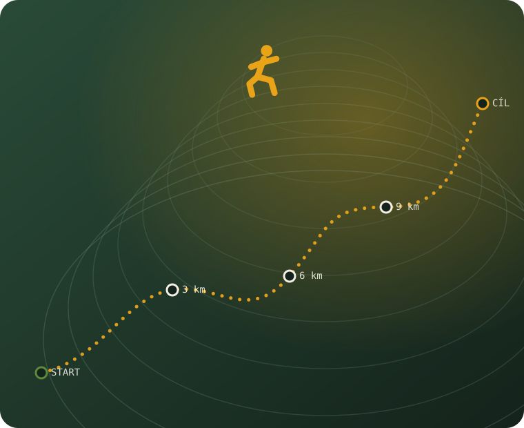

Martin K.
SPOLUZAKLADATEL
tempo 4:45/km · maraton 3:28
PELHŘIMOV · KAŽDÝ TÝDEN
Jsme otevřená parta lidí, které spojuje běh a Pelhřimov. Nezáleží, jestli jdeš na svůj první kilometr, nebo trénuješ na maraton – scházíme se, vybíháme do kopců Vysočiny a poznáváme se za běhu.

Nedělní long run · 11 km01 — Kdo jsme
Začalo to před pár lety pár lidmi, co se scházeli na náměstí a vybíhali společně, aby se jim lépe vstávalo. Dnes je nás přes šedesát – od studentů po babičky s vnoučaty.
Nejsme klub s příspěvky ani závodní tým. Jsme komunita. Běháme kvůli tomu, jak se po výběhu cítíme, kvůli ránům nad mlhou a hlavně kvůli lidem, které bychom jinak nepotkali.
U nás nikdo neběží sám. Pomalejší mají svou skupinku, rychlí svou – a na startu i v cíli jsme vždycky spolu.
Žádné závodění o to, kdo je lepší. Držíme se pohromadě a čekáme na sebe.
Lesní pěšiny, polňačky i městské okruhy – ukážeme ti Pelhřimov z běžecké strany.
První výběh je vždycky nejtěžší. Vezmeme tě mezi sebe a půjde to samo.
Nejlepší část výběhu bývá to, co přijde po něm – posezení a povídání.
02 — Fotogalerie
Svítání, bláto, úsměvy v cíli. Přidej i své fotky z výběhů – zobrazí se rovnou tady.
Fotky, které přidáš, se uloží jen v tomto prohlížeči a zařízení – slouží jako tvoje soukromá nástěnka. Pro sdílenou galerii viz README.
03 — Trasy
Tři oblíbené okruhy, které střídáme podle nálady a počasí. Od rovinatého rozběhání po pořádný kopcovitý long run.
04 — Běžci
Pár tváří z party. U nás nejsou trenéři a svěřenci – jen lidi, co si navzájem drží tempo.
Martin K.
SPOLUZAKLADATEL
tempo 4:45/km · maraton 3:28
Jana N.
SKUPINKA ZAČÁTEČNÍKŮ
tempo 6:30/km · první 10 km ✓
Petr L.
LONG RUN NADŠENEC
tempo 5:10/km · nejraději 20+ km
Tereza D.
RANNÍ PTÁČE
tempo 5:40/km · výběhy před prací
Eva V.
TRAILAŘKA
tempo 5:55/km · miluje bláto
Radek B.
FOTOGRAF PARTY
tempo 7:00/km · a spousta fotek
Přidej se na nejbližší výběh. Stačí přijít – boty, chuť a nic víc. O zbytek se postaráme.
05 — Kontakt
Sraz je vždy na Masarykově náměstí u kašny. Přijď o pár minut dřív, ať se stihneme pozdravit.